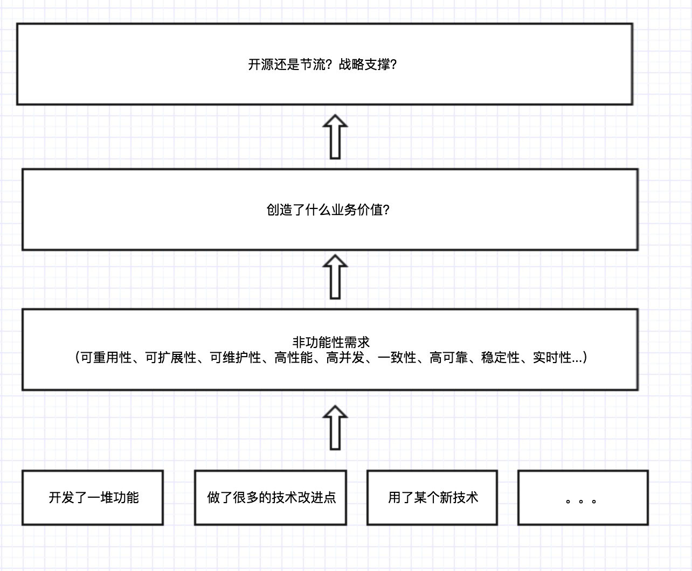

<!DOCTYPE html>
<html>
<head><meta name="generator" content="Hexo 3.9.0">
    <meta charset="UTF-8">
    <meta name="viewport" content="width=device-width, initial-scale=1, maximum-scale=1">
    
    <meta name="author" content="挥手の骑士">
    
    
    
    
    
    
    <title>技术管理看这一篇就够了 | 骑士の物语</title>
    <link href="https://yihuishou.github.io" rel="prefetch">

    <link rel="stylesheet" href="/css/bootstrap.min.css">
<link rel="stylesheet" href="/css/aos.css">
<link rel="stylesheet" href="/css/style.css">
    <script src="/js/jquery.min.js"></script>
    <script src="/js/bootstrap.min.js"></script>
    <script src="/js/aos.js"></script>
    <script src="/js/highslide/highslide-full.min.js"></script>
    <link rel="stylesheet" href="/js/highslide/highslide.css">
    <style type="text/css">
        @media (max-width: 768px) {
            body {
                background-color: #f0f0f0;
                background: url('/imgs/xsbg.gif');
                background-attachment: fixed;
            }
        }
    </style>
    
    <!--<script type="text/javascript">
      if (document.images) {
        var avatar = new Image();
        avatar.src = '/imgs/avatar.jpg'
        var previews = 'picHD_1.png,picHD_2.png,picHD_3.png,picHD_4.png,picHD_5.png,picHD_6.png,picHD_7.png,picHD_8.png,picHD_9.png,picHD_10.png,picHD_11.png,picHD_12.png,picHD_13.png,picHD_14.png,picHD_15.png,picHD_16.png,picHD_17.png,picHD_18.png,picHD_19.png,picHD_20.png,picHD_21.png,picHD_22.png,picHD_23.png,picHD_24.png,picHD_25.png,picHD_26.png,picHD_27.png,picHD_28.png,picHD_29.png,picHD_30.png,picHD_31.png,picHD_32.png,picHD_33.png,picHD_34.png,picHD_35.png,picHD_36.png,picHD_37.png,picHD_38.png,picHD_39.png,picHD_40.png,picHD_41.png,picHD_42.png'.split(',')
        var previewsPreLoad = []
        for(var i = 0; i < length; i++) {
          previewsPreLoad.push(new Image())
          previewsPreLoad[previewsPreLoad.length - 1].src = '/imgs/preview' + previews[i]
        }
      }
    </script>-->
</head></html>
<body>
    <!-- 背景轮播图功能 -->
    <section class="hidden-xs">
    <ul class="cb-slideshow">
        <li><span>天若</span></li>
        <li><span>有情</span></li>
        <li><span>天亦老</span></li>
        <li><span>我为</span></li>
        <li><span>长者</span></li>
        <li><span>续一秒</span></li>
    </ul>
</section>
    <!-- 欧尼酱功能, 谁用谁知道 -->
    
    <header class="navbar navbar-inverse" id="gal-header">
    <div class="container">
        <div class="navbar-header">
            <button type="button" class="navbar-toggle collapsed"
                    data-toggle="collapse" data-target=".bs-navbar-collapse"
                    aria-expanded="false">
                <span class="fa fa-lg fa-reorder"></span>
            </button>
            <a href="https://yihuishou.github.io">
                
                <style>
                    #gal-header .navbar-brand {
                        height: 54px;
                        line-height: 24px;
                        font-size: 28px;
                        opacity: 1;
                        background-color: rgba(0,0,0,0);
                        text-shadow: 0 0 5px #fff,0 0 10px #fff,0 0 15px #fff,0 0 20px #228DFF,0 0 35px #228DFF,0 0 40px #228DFF,0 0 50px #228DFF,0 0 75px #228DFF;
                    }
                </style>
                <!-- 这里使用文字(navbar_text or config.title) -->
                <div class="navbar-brand">骑士の物语</div>
                
            </a>
        </div>
        <div class="collapse navbar-collapse bs-navbar-collapse">
            <ul class="nav navbar-nav" id="menu-gal">
                
                
                <li class="">
                    <a href="/">
                        <i class="fa fa-home"></i>首页
                    </a>
                </li>
                
                
                
                <li class="">
                    <a href="/archives">
                        <i class="fa fa-archive"></i>归档
                    </a>
                </li>
                
                
            </ul>
        </div>
    </div>
</header>
    <div id="gal-body">
        <div class="container">
            <div class="row">
                <div class="col-md-8 gal-right" id="mainstay">
                    
<article class="article well article-body" id="article">
    <div class="breadcrumb">
        <i class="fa fa-home"></i>
        <a href="https://yihuishou.github.io">骑士の物语</a>
        >
        <span>技术管理看这一篇就够了</span>
    </div>
    <!-- 大型设备详细文章 -->
    <div class="hidden-xs">
        <div class="title-article">
            <h1>
                <a href="/2018/05/24/595384478/">技术管理看这一篇就够了</a>
            </h1>
        </div>
        <div class="tag-article">
            
            <span class="label label-gal">
                <i class="fa fa-tags"></i>
                
                <a href="/tags/随笔/">随笔</a>
                
            </span>
            
            <span class="label label-gal">
                <i class="fa fa-calendar"></i> 2018-05-24
            </span>
            
        </div>
    </div>
    <!-- 小型设备详细文章 -->
    <div class="visible-xs">
        <center>
            <div class="title-article">
                <h4>
                    <a href="/2018/05/24/595384478/">技术管理看这一篇就够了</a>
                </h4>
            </div>
            <p>
                <i class="fa fa-calendar"></i> 2018-05-24
            </p>
            <p>
                
                <i class="fa fa-tags"></i>
                
                <a href="/tags/随笔/">随笔</a>
                
                
                
            </p>
        </center>
    </div>
    <div class="content-article">
        <h3 id="“不确定性”-amp-风险把控"><a href="#“不确定性”-amp-风险把控" class="headerlink" title="“不确定性”&amp;风险把控"></a>“不确定性”&amp;风险把控</h3><p>作为一个程序员，在其职业生涯发展过程中，随着工作年限的增长，项目经验和技术能力会不断提升。而在这个过程中，都绕不开一个问题：技术管理。</p>
<p>技术管理，说的通俗一点，就是你如何带领一个团队完成一次次的产品迭代，一个个的项目开发。这里面牵涉的东西很多很杂，包括研发、测试、运维、产品、项目管理、数据分析…</p>
<p>不一而足，不同类型的项目、不同的公司文化，在这个事情的做法上都会有差异。</p>
<p>但不管这些差异如何，有一些共同的思维，或者说方法论，是相通的。而从本序列开始，我将分享一下自己在这方面的一些经验和思考。</p>
<p>在我看来，技术管理首先就是要应对”不确定性“问题。就人的认知来讲，做任何事情，你的思路都是从一个”朦胧“到逐步”清晰“的过程，项目的进展也是一个从思路、到方案、到落地的一个逐步细化过程。</p>
<p>这个过程中，不可避免的存在各种”灰度“，或者说”不确定性“。而管理，就是要提前防范这里面的各种”不确定性“，并采取对应措施，让整个团队、整个项目最终经过重重干扰，到达终点。</p>
<p>那都有哪些”不确定性“呢？下面是我的一些总结归纳：</p>
<h4 id="需求的不确定性"><a href="#需求的不确定性" class="headerlink" title="需求的不确定性"></a>需求的不确定性</h4><p>做产品或者做项目时，产品经理或者大老板，或者其他相关人员，都会有很多“想法”。</p>
<p>有些想法很成熟，逻辑严密，很有系统性；而有些想法还欠火候，需要进一步细化；还有些想法，纯粹是头脑风暴，想想而已…</p>
<p>而由于各种外部条件，比如工期的约束，绩效的追逐，老大的压力…很可能在一个想法没有完全想清楚的情况下，就开始了实施。</p>
<p>这就是一个重大的“不确定性”。遇到这种情况，作为技术的leader，需要去和产品经理、和相关业务方、上级老大等，进行广泛的沟通，最终在这个事情上，要达成“共识”：到底哪些东西清晰的，我们可以开做；哪些还需要进一步思考，细化…</p>
<h4 id="技术的不确定性"><a href="#技术的不确定性" class="headerlink" title="技术的不确定性"></a>技术的不确定性</h4><p>在做一个新项目时，你可能会遇到技术选型的问题，团队中成员都没有掌握过的某个框架，或者某个开源库，某个对接的第3方开放API等等…</p>
<p>对于这种情况，必须在项目早期，做尽可能多的调研、测试。引入的技术框架，什么特性可以支持，什么特效支持不了；技术选型，不同方案的优缺点…</p>
<p>尤其是一些关键的技术细节，如果在前期不调研做实，等到中后期，才发现某个feature支持不了，或者有问题，可能将对整个的技术架构和项目进度，产生严重影响。</p>
<h4 id="人员的不确定性"><a href="#人员的不确定性" class="headerlink" title="人员的不确定性"></a>人员的不确定性</h4><p>系统耦合性高，一个关键模块的开发人员的突然离职，新来成员对项目不熟悉，然后慢慢摸熟，上路，等最后项目完工，离预定工期已经差了一大截。</p>
<p>对于这种情况，一个应对策略就是：不要把项目最核心的东西，让一个人去开发维护，别人都插手不了。要分摊风险，在技术的架构设计层面，保证整个系统耦合性不要太高，根据团队成员的水平，每个人都可以cover一块东西。这样某个人离职，有相应的人可以补上。</p>
<h4 id="组织的不确定性"><a href="#组织的不确定性" class="headerlink" title="组织的不确定性"></a>组织的不确定性</h4><p>公司越大，业务越复杂，部门越多。随便做一个项目，都可能跟好几个业务部门打交道。这些部门可能还在异地，平时只能即时通信，或者远程电话沟通。</p>
<p>对于这种情况，前期必须要做尽可能多的沟通，调研对方提供的业务能力，哪些目前有，哪些目前在开发中，哪些还没有…</p>
<p>在充分沟通的基础上，跟对方敲定排期表，不定期的同步进度，Push对方，保证对方的进度和自己在一个节奏上。</p>
<h4 id="历史遗留问题"><a href="#历史遗留问题" class="headerlink" title="历史遗留问题"></a>历史遗留问题</h4><p>一般当你进入一个公司，除了创业型公司，很少会一上来就做一个新项目。首先都是会接手前人留下的老项目，在此基础上进行迭代升级。</p>
<p>运气好呢，老项目技术架构很清晰，文档清楚，业务清楚，还有熟悉的其他同事</p>
<p>运气不好呢，遗留项目欠了很多技术债，之前的开发人员也走了，业务很多不熟悉。</p>
<p>对于这种情况，你就需要对项目进行完整的梳理了：从产品到技术，找各个接口人聊，可能经过了两三个月，你才对整个系统有了一个全局的把控。</p>
<h4 id="最后"><a href="#最后" class="headerlink" title="最后"></a>最后</h4><p>上面列举了带团队做项目的过程中，遇到的几个常见的“不确定性”问题，真正做的过程中，不同项目又会有差别。</p>
<p>这里主要想强调的是：要有这种“风险把控”的意识，有了这种意识，你在项目早期，自然会去努力的想各种各样的“不确定性”，然后早做打算，未雨绸缪。</p>
<h3 id="塑造团队中的影响力"><a href="#塑造团队中的影响力" class="headerlink" title="塑造团队中的影响力"></a>塑造团队中的影响力</h3><p>刚入职场时，大家都很青涩，能力也都差不多。然后几年之后，有的人升成了leader，负责更大的事情；有的人还在原地踏步，没有多大提升。</p>
<p>影响一个人职业生涯的因素有很多，有公司业务问题，有运气问题，有跟的人/团队是不是靠谱的问题，有个人和领导性格是否合拍的问题。这些问题呢，很多超出了一个技术人的掌控范围。</p>
<p>而本文呢，想从最底层谈谈，作为一个技术人，如何务实的一点点塑造你自己的影响力。而这个事情里面，没有运气成分，是任何一个人，只要你用心做，都可以做到的。</p>
<h4 id="关键时候要能顶的上"><a href="#关键时候要能顶的上" class="headerlink" title="关键时候要能顶的上"></a>关键时候要能顶的上</h4><p>在一个组织开展业务的过程中，必然会有一些比较“关键”的point： </p>
<p>某个bug困扰了团队1个星期，也没有人搞定； </p>
<p>某个成员离职，他负责的模块没有人接手； </p>
<p>某个用户反映的问题，像牛皮癣一样，总是时不时发生，没办法根治； </p>
<p>某个需求发生工期延误，到了快上线的时候，上不了；<br>……<br>如此种种，有的人的解决办法是“能避开就避开”，有的人解决办法是主动迎上，“死磕”，不解决誓不罢休……</p>
<h4 id="打工思维，还是老板思维"><a href="#打工思维，还是老板思维" class="headerlink" title="打工思维，还是老板思维"></a>打工思维，还是老板思维</h4><p>你是打工思维，安排的事干完了，其他一概不管。只管好自己那一亩3分地，技术搞完了，产品、运营、业务发展，一概不关心。产品体验好不好，业务发展前景如何，与你无关。</p>
<p>你是老板思维，你会想这个产品的价值究竟在哪？ </p>
<p>这个产品有什么问题，如何改进？ </p>
<p>团队的协作流程又什么问题，如何改进？ </p>
<p>技术架构有什么问题，如何改进？ </p>
<p>某些用户投诉一直没解决，如何处理？<br>……</p>
<h4 id="空杯心态"><a href="#空杯心态" class="headerlink" title="空杯心态"></a>空杯心态</h4><p>术业有专攻。再牛叉的人，他也只是在某个领域很厉害，换个领域，他可能什么都不懂。</p>
<p>技术、产品、运营、测试、运维。。每个领域都有自己的门道。再细化一点，单说技术：前端、后端、架构、算法、数据。。每个子领域也都有自己很深的门道。</p>
<p>说这，是想说明，任何时候，你需要意识到自己的“无知”。只有意识到自己是“无知的”，是有“局限的”，你才可能不断去吸收别人的意见，不断去改进自己的工作方法，提升自己的专业能力、视野。</p>
<p>不然就会一直呆在自己的舒适区里面，刚愎自用。自认为知道的很多，其实很少。</p>
<h4 id="持续改进"><a href="#持续改进" class="headerlink" title="持续改进"></a>持续改进</h4><p>世界上从来没有做到100分的事情。产品也好，业务流程也好，技术架构也好，项目管理也好，运营也好。。只要你想“鸡蛋挑骨头”，总是可以挑出要改进的地方。</p>
<p>说这，是想说明，你得有“批判性”思考的习惯。不要觉得“差不多”就可以了，要追求极致，其实有很多事情要做。</p>
<p>大家从小到大都在考试，都知道这样一个道理：从不及格到60分，很容易；从60分做到80分，难一点；从80分做到95分，很难；从95分到100分，每增加1分，难上加难。</p>
<p>做事情跟考试一样，有的人选择做很多事情，但每个事情都只及格；有的人选择做一个事情，不断往100分靠近。</p>
<h4 id="建言献策"><a href="#建言献策" class="headerlink" title="建言献策"></a>建言献策</h4><p>接着上面一个问题，如果你有“批判性思考”的能力，你能看到一个组织存在的各种问题，并想出应对的解放办法。</p>
<p>然后多和同事、和领导沟通这些事情，无论对于个人成长，还是组织，都是一个正向作用。</p>
<h4 id="最后-1"><a href="#最后-1" class="headerlink" title="最后"></a>最后</h4><p>说了这么多，最后我们换位思考一下：</p>
<p>如果你看到公司某个同事，他关键时候顶的上，他做事追求极致，他思考总是很全面，他对业务的了解总是比其他技术人员要多，他总是很虚心的接受改进，他总是时不时给公司提出自己的建议。。你会如何看待？</p>
<h3 id="技术的价值模型"><a href="#技术的价值模型" class="headerlink" title="技术的价值模型"></a>技术的价值模型</h3><p>作为一个程序员，特别是有技术追求的程序员，最经常关注的就是：技术有多么牛，多么复杂，多么酷炫。。可当被问到你做的东西，有什么“价值”时，往往却很难说清楚。</p>
<p>在这里，我想抛出这样一个终极问题：技术的价值到底是什么？</p>
<p>我们都知道Github上有很多开源项目，那么这些项目的价值大小，是如何衡量的呢？下面有一些考虑因素： </p>
<p>以技术复杂度来衡量？ </p>
<p>以代码行数来衡量？ </p>
<p>以技术的先进与否衡量？ </p>
<p>以是否有创新性衡量？</p>
<p>我想都不是。在个人看来，衡量这些项目的关键指标是：多少人使用了这个开源项目。</p>
<p>即使这个开源项目代码量很少，功能也很简单，但如果很多组织、很多个人都在用，那它就是有巨大价值的！</p>
<p>从这个意义上讲，技术所追求的”价值“和产品所追求的”价值“是一样的，殊途同归，最终都是要为“用户”服务。</p>
<p>下面我总结了这样一个4层的价值模型： </p>
<p></p>
<h4 id="第1个层次"><a href="#第1个层次" class="headerlink" title="第1个层次"></a>第1个层次</h4><p>程序员最熟悉的，经常谈论的：我这个系统有多少多少个业务模块，我这个系统功能多么强大，我这个系统采用了多少多少新技术，我这个系统采用了某个牛叉的算法…</p>
<h4 id="第2个层次"><a href="#第2个层次" class="headerlink" title="第2个层次"></a>第2个层次</h4><p>追问一下，在你所做的所有工作中，最核心的是采取了哪个措施？最终可能会抽象出1到2个。</p>
<p>再追问一下，这1到2个大的技术改进，有什么价值，通常都会追问到软件的各个非功能性需求：</p>
<p>可重用性：我做了某个jar包，某个组件，某个服务，别人不再需要重复造轮子。</p>
<p>可扩展性：来了一个新的需求，我只需要配置一下，或者做很简单的代码开发，就搞定了，不需要改很多系统。</p>
<p>可维护性：整个系统解耦做的很好，代码也很整洁。要叠加功能，或者找人接手，都比较容易。</p>
<p>高性能：用户体验很好，所有请求都在100ms内返回</p>
<p>高并发：能支持千万到亿的用户并发访问</p>
<p>稳定性：系统时不时出bug，宕机，用户报case，我把这些问题都解决了。还加了监控，出了问题立即会有报警。</p>
<p>高可靠：我做了灾备方案，某个机器宕机，系统不受影响</p>
<p>一致性：我做到了强一致性，极大提高了业务体验</p>
<p>……</p>
<h4 id="第3个层次"><a href="#第3个层次" class="headerlink" title="第3个层次"></a>第3个层次</h4><p>我做的系统，为公司带来了什么业务价值：</p>
<p>极大提升了用户体验？因此促进了用户增长？ </p>
<p>提高了用户的活跃度？ </p>
<p>为公司增加了收入？ </p>
<p>降低了公司的研发成本？ </p>
<p>提升了公司的运维效率？ </p>
<p>为公司开辟了一个新的市场？ </p>
<h4 id="第4个层次"><a href="#第4个层次" class="headerlink" title="第4个层次"></a>第4个层次</h4><p>公司的本质：市场经济下的一个追求利润最大化的组织。</p>
<p>从公司角度来讲，技术也好，产品也好，运营销售也好，最终目的都是要增加公司利润。而增加利润，要么”开源“，要么“节流”。所以你做的任何东西，基本都会被归结到这个层次。</p>
<p>当然，还有一类是“战略性投入”的项目，虽然它本身不直接挣钱，或者挣钱很少，但是为了支撑其他挣大钱的业务而发挥重要作用。</p>
<h4 id="最后-2"><a href="#最后-2" class="headerlink" title="最后"></a>最后</h4><p>技术、产品、运营，殊途同归！</p>

    </div>
</article>


                </div>
                <aside class="col-md-4 gal-left" id="sidebar">
    <!-- 此为sidebar的搜索框, 非搜索结果页面 -->
<aside id="sidebar-search">
    <div class="search hidden-xs" data-aos="fade-up" data-aos-duration="2000">
        <form class="form-inline clearfix" id="search-form" method="get"
              action="/search/index.html">
            <input type="text" name="s" class="form-control" id="searchInput" placeholder="搜索文章~" autocomplete="off">
            <button class="btn btn-danger btn-gal" type="submit">
                <i class="fa fa-search"></i>
            </button>
        </form>
    </div>
</aside>
    <aside id="sidebar-author">
    <div class="panel panel-gal" data-aos="flip-right" data-aos-duration="3000">
        <div class="panel-heading" style="text-align: center">
            <i class="fa fa-quote-left"></i>
            挥手の骑士
            <i class="fa fa-quote-right"></i>
        </div>
        <div class="author-panel text-center">
            
            <p class="author-description"></p>
        </div>
    </div>
</aside>
    
    <!-- 要配置好leancloud才能开启此小工具 -->
    
    
    <aside id="sidebar-recent_posts">
    <div class="panel panel-gal recent hidden-xs" data-aos="fade-up" data-aos-duration="2000">
        <div class="panel-heading">
            <i class="fa fa-refresh"></i>
            近期文章
            <i class="fa fa-times-circle panel-remove"></i>
            <i class="fa fa-chevron-circle-up panel-toggle"></i>
        </div>
        <ul class="list-group list-group-flush">
            
            <li class="list-group-item">
                <span class="post-title">
                    <a href="/2020/10/10/2/"></a>
                </span>
            </li>
            
            <li class="list-group-item">
                <span class="post-title">
                    <a href="/2020/08/18/55226946/">Agent v3.2.1 插件激活码</a>
                </span>
            </li>
            
            <li class="list-group-item">
                <span class="post-title">
                    <a href="/2020/07/21/2412014068/">干掉 CMS 未来属于 ZGC</a>
                </span>
            </li>
            
            <li class="list-group-item">
                <span class="post-title">
                    <a href="/2020/07/21/4075219928/">OpenJDK 和 OracleJDK 的抉择</a>
                </span>
            </li>
            
            <li class="list-group-item">
                <span class="post-title">
                    <a href="/2020/07/20/368594680/">Flutter 音乐播放器开发之路（一）</a>
                </span>
            </li>
            
            <li class="list-group-item">
                <span class="post-title">
                    <a href="/2020/07/15/3650854255/">XaaS 到底是什么？</a>
                </span>
            </li>
            
            <li class="list-group-item">
                <span class="post-title">
                    <a href="/2020/07/15/4036766117/">让 Windows 10 开机自动登录</a>
                </span>
            </li>
            
            <li class="list-group-item">
                <span class="post-title">
                    <a href="/2020/07/14/466733536/">给 Flutter 项目初始化构建提个速</a>
                </span>
            </li>
            
            <li class="list-group-item">
                <span class="post-title">
                    <a href="/2020/06/12/4125727764/">JavaScript 中 Splice 函数与数组塌陷</a>
                </span>
            </li>
            
            <li class="list-group-item">
                <span class="post-title">
                    <a href="/2020/06/12/1586694155/">在 Java 中缩写 Lambda 表达式</a>
                </span>
            </li>
            
        </ul>
    </div>
</aside>
    
    
    <aside id="sidebar-rand_posts">
    <div class="panel panel-gal recent hidden-xs" data-aos="fade-up" data-aos-duration="2000">
        <div class="panel-heading">
            <i class="fa fa-refresh"></i>
            随机文章
            <i class="fa fa-times-circle panel-remove"></i>
            <i class="fa fa-chevron-circle-up panel-toggle"></i>
        </div>
        <ul class="list-group list-group-flush">
            
            
            <li class="list-group-item">
                <span class="post-title">
                    <a href="/2018/09/07/1615584056/">Java 配置类与 XML</a>
                </span>
            </li>
            
            <li class="list-group-item">
                <span class="post-title">
                    <a href="/2020/06/12/1586694155/">在 Java 中缩写 Lambda 表达式</a>
                </span>
            </li>
            
            <li class="list-group-item">
                <span class="post-title">
                    <a href="/2017/10/31/3823926681/">巴克斯·诺尔范式语法</a>
                </span>
            </li>
            
            <li class="list-group-item">
                <span class="post-title">
                    <a href="/2019/04/23/3808206341/">杰克鸡的传送门</a>
                </span>
            </li>
            
            <li class="list-group-item">
                <span class="post-title">
                    <a href="/2019/04/03/1811262184/">用于分析问题的 SMART 原则</a>
                </span>
            </li>
            
            <li class="list-group-item">
                <span class="post-title">
                    <a href="/2019/05/28/2418838881/">JavaScript 中的分号战争</a>
                </span>
            </li>
            
            <li class="list-group-item">
                <span class="post-title">
                    <a href="/2019/03/06/2191692417/">创业的初衷</a>
                </span>
            </li>
            
            <li class="list-group-item">
                <span class="post-title">
                    <a href="/2018/06/04/1923366184/">微服务与单体应用的故事</a>
                </span>
            </li>
            
            <li class="list-group-item">
                <span class="post-title">
                    <a href="/2017/12/22/3001741591/">用文件特征码来检测文件类型</a>
                </span>
            </li>
            
            <li class="list-group-item">
                <span class="post-title">
                    <a href="/2018/09/03/3512719846/">跟上Java8 流中的数据</a>
                </span>
            </li>
            
        </ul>
    </div>
</aside>
    
    
    <aside id="gal-sets">
        <div class="panel panel-gal hidden-xs" data-aos="fade-up" data-aos-duration="2000">
            <ul class="nav nav-pills pills-gal">

                
                <li>
                    <a href="/2018/05/24/595384478/index.html#sidebar-tags" data-toggle="tab" id="tags-tab">热门标签</a>
                </li>
                
                
                <li>
                    <a href="/2018/05/24/595384478/index.html#sidebar-friend-links" data-toggle="tab" id="friend-links-tab">友情链接</a>
                </li>
                
                
                <li>
                    <a href="/2018/05/24/595384478/index.html#sidebar-links" data-toggle="tab" id="links-tab">个人链接</a>
                </li>
                
            </ul>
            <div class="tab-content">
                
                <div class="cloud-tags tab-pane nav bs-sidenav fade" id="sidebar-tags">
    
    <a href="/tags/SpringSecurity/" style="font-size: 13.01566799433515px;" class="tag-cloud-link">SpringSecurity</a>
    
    <a href="/tags/随笔/" style="font-size: 17.475389998460507px;" class="tag-cloud-link">随笔</a>
    
    <a href="/tags/Xml/" style="font-size: 18.608031342645056px;" class="tag-cloud-link">Xml</a>
    
    <a href="/tags/大前端/" style="font-size: 10.887554783660544px;" class="tag-cloud-link">大前端</a>
    
    <a href="/tags/Flutter/" style="font-size: 9.381074068216531px;" class="tag-cloud-link">Flutter</a>
    
    <a href="/tags/Dart/" style="font-size: 8.137088904823143px;" class="tag-cloud-link">Dart</a>
    
    <a href="/tags/Go/" style="font-size: 10.779918124025254px;" class="tag-cloud-link">Go</a>
    
    <a href="/tags/IDEA/" style="font-size: 11.820683614642284px;" class="tag-cloud-link">IDEA</a>
    
    <a href="/tags/Java/" style="font-size: 10.537138166199233px;" class="tag-cloud-link">Java</a>
    
    <a href="/tags/JavaScript/" style="font-size: 8.591040612153003px;" class="tag-cloud-link">JavaScript</a>
    
    <a href="/tags/Oracle/" style="font-size: 17.74773687916066px;" class="tag-cloud-link">Oracle</a>
    
    <a href="/tags/Photoshop/" style="font-size: 11.259388189627916px;" class="tag-cloud-link">Photoshop</a>
    
    <a href="/tags/Restful/" style="font-size: 10.063854634862313px;" class="tag-cloud-link">Restful</a>
    
    <a href="/tags/RPG-Maker-MV/" style="font-size: 10.645881623475628px;" class="tag-cloud-link">RPG Maker MV</a>
    
    <a href="/tags/SQL/" style="font-size: 11.624947888017422px;" class="tag-cloud-link">SQL</a>
    
    <a href="/tags/SpringBoot/" style="font-size: 18.529396462579935px;" class="tag-cloud-link">SpringBoot</a>
    
    <a href="/tags/Swagger/" style="font-size: 10.556685325385224px;" class="tag-cloud-link">Swagger</a>
    
    <a href="/tags/Windows/" style="font-size: 16.345209986876107px;" class="tag-cloud-link">Windows</a>
    
    <a href="/tags/Deepleanring/" style="font-size: 18.875535745411376px;" class="tag-cloud-link">Deepleanring</a>
    
    <a href="/tags/Vue/" style="font-size: 19.316743720796275px;" class="tag-cloud-link">Vue</a>
    
    <a href="/tags/Mysql/" style="font-size: 12.630784005851066px;" class="tag-cloud-link">Mysql</a>
    
    <a href="/tags/Docker/" style="font-size: 14.890472083724365px;" class="tag-cloud-link">Docker</a>
    
    <a href="/tags/Hexo/" style="font-size: 13.43842940999926px;" class="tag-cloud-link">Hexo</a>
    
    <a href="/tags/VsCode/" style="font-size: 9.429700700796609px;" class="tag-cloud-link">VsCode</a>
    
    <a href="/tags/SpringCloud/" style="font-size: 19.015287066376185px;" class="tag-cloud-link">SpringCloud</a>
    
    <a href="/tags/Redis/" style="font-size: 14.176540107431917px;" class="tag-cloud-link">Redis</a>
    
</div>
                
                
                <div class="friend-links tab-pane nav bs-sidenav fade" id="sidebar-friend-links">
    
    <li>
        <a href="http://noodlefighter.com" target="_blank">虾包</a>
    </li>
    
    <li>
        <a href="https://loli.la" target="_blank">超级叫了</a>
    </li>
    
    <li>
        <a href="https://konata9.github.io" target="_blank">吃土的小此方</a>
    </li>
    
</div>
                
                
                <div class="links tab-pane nav bs-sidenav fade" id="sidebar-links">
    
    <li>
        <a href="https://github.com/yihuishou" target="_blank">Github</a>
    </li>
    
    <li>
        <a href="https://gite.com/yihuishou" target="_blank">码云</a>
    </li>
    
    <li>
        <a href="https://www.zhihu.com/people/hei-yi-tian-shi-48" target="_blank">知乎</a>
    </li>
    
</div>
                
            </div>
        </div>
    </aside>
    
</aside>
            </div>
        </div>
    </div>
    <footer id="gal-footer">
    <div class="container">
        Copyright © 2018 挥手の骑士 Powered by <a href="https://hexo.io/" target="_blank">Hexo</a>.&nbsp;Theme by <a href="https://github.com/ZEROKISEKI" target="_blank">AONOSORA</a>
    </div>
</footer>

<!-- 回到顶端 -->
<div id="gal-gotop">
    <i class="fa fa-angle-up"></i>
</div>
</body>
<script src="/js/activate-power-mode.js"></script>
<script>

    // 配置highslide
	hs.graphicsDir = '/js/highslide/graphics/'
    hs.outlineType = "rounded-white";
    hs.dimmingOpacity = 0.8;
    hs.outlineWhileAnimating = true;
    hs.showCredits = false;
    hs.captionEval = "this.thumb.alt";
    hs.numberPosition = "caption";
    hs.align = "center";
    hs.transitions = ["expand", "crossfade"];
    hs.lang.number = '共%2张图, 当前是第%1张';
    hs.addSlideshow({
      interval: 5000,
      repeat: true,
      useControls: true,
      fixedControls: "fit",
      overlayOptions: {
        opacity: 0.75,
        position: "bottom center",
        hideOnMouseOut: true
      }
    })

    // 初始化aos
    AOS.init({
      duration: 1000,
      delay: 0,
      easing: 'ease-out-back'
    });

</script>
<script>
	POWERMODE.colorful = 'true';    // make power mode colorful
	POWERMODE.shake = 'true';       // turn off shake
	// TODO 这里根据具体情况修改
	document.body.addEventListener('input', POWERMODE);
</script>
<script>
    window.slideConfig = {
      prefix: '/imgs/slide/background',
      ext: 'jpg',
      maxCount: '6'
    }
</script>
<script src="/js/hs.js"></script>
<script src="/js/blog.js"></script>


</html>